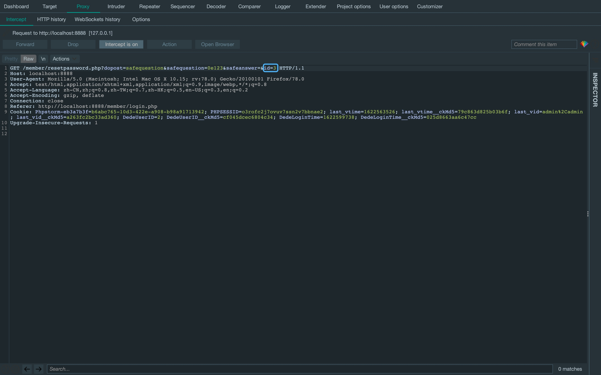

前言
上一个cms的两个cve感觉比较简单。之前在打红明谷线下半决赛的时候， 遇到的靶站是dedecms。所以，这次换个dedecms来玩玩。
配置环境
首先官网下载一下dedecms v5.7。

常规安装流程后，进入后台管理系统开启会员功能(不开启是不能注册的)。
前台任意用户登录
首先注册一个用户名为000001的账户 (只要经过intval()函数处理后为1的值即可，后面代码分析的时候会讲到)。
接着，管理员需要审核注册的用户。这里直接上后台管理设置权限。

访问/member/index.php?uid=000001，获取cookie中的last_vid__ckMd5。

设置cookie['DeDeUserID_ckMd5']为cookie['last_vid__ckMd5']的值， cookie['DedeUserID']为000001，成功从前台登录admin。
找到/include/memberlogin.class.php，可以看到这里通过GetCookie("DedeUserID")去获取cookie。

跟进一下GetCookie("DedeUserID")函数，可以看到这里还对cookie字段的字检验了hash salt， 防止直接伪造cookie，注意看这里的校验方式是substr(md5($cfg_cookie_encode.$_COOKIE[$key]),0,16)。

既然防止直接伪造cookie，那就应该依靠cms本身的功能生成一个可以利用的cookie以及校验它的hash salt。 这里看到/member/index.php，用了PutCookie('last_vid', $last_vid, 3600*24, '/')方法来生成cookie。
跟进一下PutCookie()函数，可以看到这里用substr(md5($cfg_cookie_encode.$_COOKIE[$key]),0,16)生成cookie['last_vid__ckMd5']。
所以，可以利用这里来伪造需要满足substr(md5($cfg_cookie_encode.$_COOKIE[$key]),0,16)校验的cookie。这就解释了为什么要在member/index.php?uid=000001拿取cookie['last_vid__ckMd5']赋值给member/index.php中的cookie['DeDeUserID_ckMd5']。

在设置cookie['DeDeUserID_ckMd5']为cookie['last_vid__ckMd5']， 以及cookie['DedeUserID']为000001后，这里GetCookie['DedeUserID']就变为000001， 并且经过同样加密方式伪造的cookie['last_vid__ckMd5']也能经过校验。
也就是说，170行的$this->M_ID的值其实为账户的用户名。 再看到178行，$this->M_ID还经过了intval()函数的洗礼。 而一般系统中admin管理员的ID都为1，所以只需要注册一个满足intval(用户名) = 1的用户即可伪造admin登录。
修复方案
(1) 检测用户名，不允许注册或修改为intval()后为userid的用户名。
(2) 注释掉/member/index.php 161-162行的两个Putcookie()函数，使之不可以伪造。
前台任意用户密码修改
首先登录一个用户，接着构造请求/member/resetpassword.php?dopost=safequestion&safequestion=0e123&safeanswer=&id=3 (id为要修改密码的账户id)。
来到安全问题的代码段，可以看到84行的$safequestion跟$safeanswer通过弱比较判断。 所以，只要控制好这两个变量就能进入sn($mid, $row['userid'], $row['email'], 'N')函数。
令dopost=safequestion&safequestion=0e123&safeanswer=&id=3来后台管理系统查看一下安全问题的默认值，可以看到$safequestion=0，$safeanswer为空。 所以，令safequestion=0e123&safeanswer=即可进入sn($mid, $row['userid'], $row['email'], 'N')函数。
进入sn($mid, $row['userid'], $row['email'], 'N')函数后，判断是否已经生成随机密码。 如果已生成，进入160行的newmail()函数；如果未生成，进入165行的newmail()函数。 这里因为我前面已经测试过了，所以会进入165行，但其实结果都一样。
跟进一下newmail()函数，可以看到这里通过random()函数生成一个八位随机数密码。 这里虽然看起来要爆破，但在94行的位置直接将randval传入$_GET['key']参数中。
如果在上面判断已生成随机密码，则会走到这里的$type == 'UPDATE'分支。 结果也是在116行直接将randval传入$_GET['key']参数中。
接下来会带着这个$_GET['key']跳转到修改密码页面，相当于跳过了身份验证的环节。 不过需要注意这里的url中会带有实体编码的&即&，需要手动去除。
最后，跳转到修改密码的页面进行修改密码即可。
这里是修改密码的代码段。
修复方案
将/member/resetpassword.php 第84行中的弱比较改为强比较。
修改后台管理员密码
看到管理员修改密码的代码段，可以看出一旦admin在前台修改了密码， 则后台管理系统会自动同步这个前台的密码，即前台修改的是admin前后台的密码。 但有个问题就是前台是默认禁止登录admin账户的。所以，需要搭配前面的漏洞来进行修改。
修复方案
设置难以被探测到的后台地址名，处理好(隐藏)跳转到后台地址的功能。
后台代码执行漏洞[CVE-2018-7700]
既然已经能拿到后台管理员的密码，那么就需要进一步拿网站的shell了。 首先看到/dede/tag_test_action.php，这里有一个csrf_check()函数进行csrf token检验。 所以，这里需要伪造一下csrf token。
跟进一下csrf_check()函数，查看一下csrf token的参数是token。
访问上传点dede/tpl.php?action=upload，在前端找一下csrf token的值。
带着csrf token的值去请求一下。
令token=cee74ee80b8a45f04d9d591374ec3df0csrf_check()函数绕过后来到$pv->SetTemplet($partcode, "string")。
跟进一下$pv->SetTemplet($partcode, "string")，这里进入了$this->dtp->LoadSource($temp)。
跟进一下$this->dtp->LoadSource($temp)，可以看到payload被存入inc文件， 继续跟进$this->LoadTemplate($filename)。
来到$this->LoadTemplate($filename)，这里先将inc文件中每行内容拿出来赋值给$this->SourceString， 感觉没什么用。跟踪变量的流向，跟进到下面的$this->LoadCache($filename)。
来到$this->LoadCache($filename)，这里将payload写入缓冲，等待类去读取内容。
接下来来看一下，如何去触发解析这个写在缓冲中的payload。 回到开头那个文件的最后一行，这里调用了$pv->Display()函数。
跟进一下$pv->Display()函数，可以看到调用了$this->dtp->Display()函数。
查看一下$this->dtp->Display()，发现调用了$this->GetResult()函数。

跟进一下$this->GetResult()，自然而然地调用$this->AssignSysTag()函数。
这里判断缓冲区中的payload是否有运行runphp接口的标志，有的话进入$this->RunPHP($CTag, $i)。
令rpartcode={dede:field name='source' runphp='yes'}phpinfo();{/dede:field}进入$this->RunPHP($CTag, $i)，成功eval执行payload。
payload
GET: /dede/tag_test_action.php?token={upload_csrf_token}&partcode={dede:field name='source' runphp='yes'}phpinfo();{/dede:field}
# {upload_csrf_token}需要换成/dede/tpl.php?action=upload前端的token修复方案
(1) 改写csrf_check()函数。
(2) 标签中禁用php接口。
There Is Nothing Below
 Turn at the next intersection.
Turn at the next intersection.